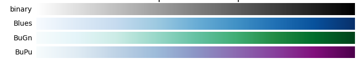
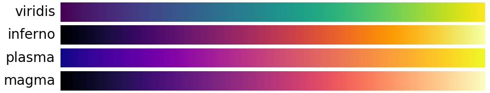
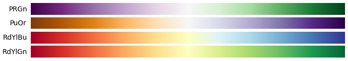
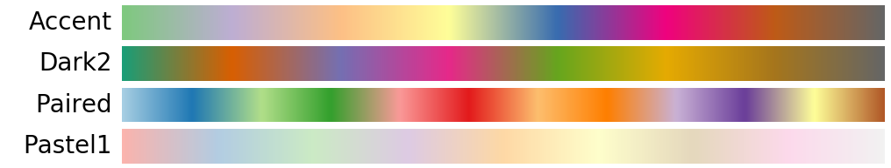

Rage Against the Rainbow
A brief discussion about why the default colourmap usually sucks
Martin Bentley / @astonsplat
s214382818@nmmu.ac.za
16 September 2016
Supervisors: Dr L. Cowley | Prof M. Doucouré
Dept. of Computing Sciences | Dept. of Earth Sciences
Some basic colour theory
In less than a minute
Common colour spaces include:
- RGB
- CMYK
- Munsell
- Pantone
- CIELAB
Types of data
Sequential
Diverging
Categorical
Sequential Data
Increases from low to high
- Intensity of light
- Time-linked

Sequential Data
Increases from low to high
- Intensity of light
- Time-linked

Diverging Data
Has a given midpoint and increases and decreases away from that point
- Stock prices
- Elevation and bathymetry

Categorical Data
No particular numerical association
- Demographic category
- Type of industry

Why the rainbow sucks
Not linear lightness
Colour-blindness and greyscale
Different types
- Protanomaly/Protanopia
- Deuteranomaly/Deuteranopia
Resources
- http://colorbrewer2.org/ Good way to choose colourmaps
- http://vrl.cs.brown.edu/color Choose colourmaps of certain colours
- http://colororacle.org/ Check for colourblind safety
References
- Borland, D., Taylor II, R.M., 2007. Rainbow color map (still) considered harmful. IEEE Computer Graphics and Applications 27, 14–17.
- Niccoli, M., 2012. The rainbow is dead...long live the rainbow! [WWW Document]. MyCarta. URL http://mycarta.wordpress.com/2012/05/29/the-rainbow-is-dead-long-live-the-rainbow-series-outline/ (accessed 9.15.14).
- Simmon, R., 2014a. Subtleties of Color 1/6 [WWW Document]. URL http://earthobservatory.nasa.gov/blogs/elegantfigures/2013/08/05/subtleties-of-color-part-1-of-6/ (accessed 8.4.14).
A last look at the colourmaps